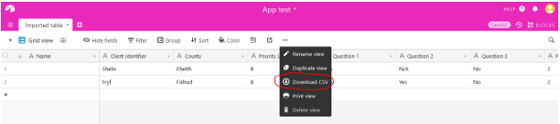
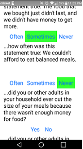

Home-Delivered Meals Prioritization Tool
When I was studying dietetics before my transition into information science, I was given the wonderful opportunity to help develop a mobile application that would facilitate the process of screening older adults for food security. Through the use of this tool, older adults are prioritized into different food security levels and the data are imported into a spreadsheet to make it easier for health professionals to determine their food security needs. This app essentially asks the user a series of questions developed by the University of Maryland's College of Agriculture and Natural Resources Department of Nutrition and Food Science. Different answers lead to different questions and points in order to ultimately determine the individual's priority level.
This app was developed through Thunkable X, a platform for creating mobile applications that is compatible with both iOS and Android. To store the data collected via the app, I used Airtable, which is a cloud collaboration service that provides spreadsheet-database hybrid products. The information collected from the app is sent to an Airtable in which health professionals get access to the data and results collected by the app.
